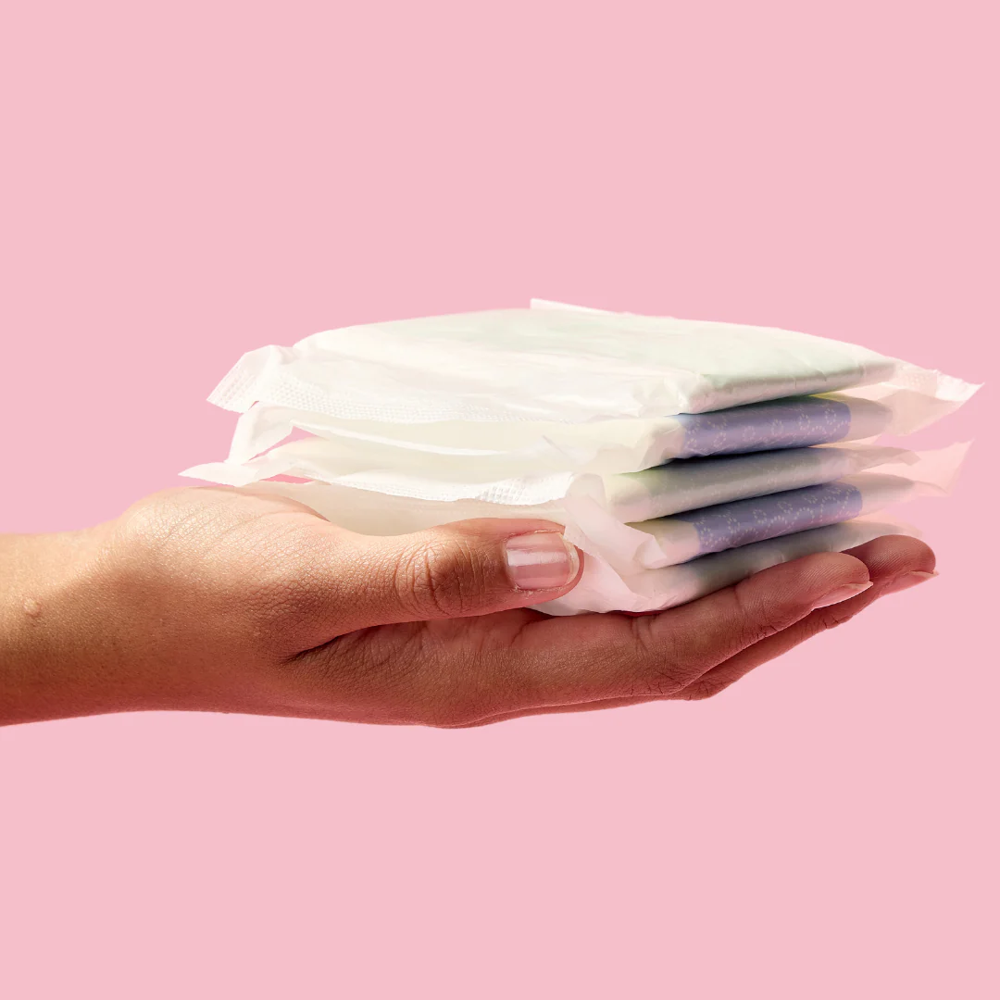

Project Embrace
Location: Lagos, Nigeria
In an effort to give back, I organized Project Embrace, a donation and visitation initiative aimed at supporting children in orphanages in Lagos, Nigeria. The project began with collecting donations—clothing, school supplies, and hygiene items—through local drives and social media outreach. But to me, this project was never just about dropping off supplies. I wanted to create a connection with the children. After delivering the donations, I spent the day reading books, playing games, and simply hanging out with them. The experience was incredibly moving. I saw firsthand how impactful simple acts of time and care could be. Many of the kids just wanted to talk, laugh, and be heard. This project reminded me how deeply people need connection, not just material support. Project Embrace taught me that real service means showing up fully with your hands and your heart.
Precision Irrigation Research
While working with the Department of Agriculture at the University of Missouri, I was part of a research team focused on optimizing irrigation systems to reduce water and energy waste in crop production. We used sensor-based precision irrigation systems that monitored environmental conditions like soil moisture, sunlight, and temperature. My role included setting up equipment, collecting and analyzing data, and maintaining the functionality of the systems in real field conditions. I learned how small adjustments in water delivery can significantly impact plant health and resource use. This hands-on work pushed me to think critically and adapt quickly. I also gained experience using tools like MATLAB to process our data. Beyond the technical skills, the experience deepened my interest in sustainability and showed me how engineering and agriculture can work together to support global food systems. This research reinforced my goal to pursue environmentally conscious engineering work.
Pad a Girl Initiative
Location: Lagos, Nigeria
The Pad a Girl Initiative is a menstrual equity project I created to support girls who lack access to sanitary products. After seeing how many young girls miss school or feel ashamed during their periods, I knew something had to be done. I started by raising awareness online and collecting donations to fund reusable pad kits. Each kit included cloth pads, soap, underwear, and a small instruction guide. But distributing kits was only part of the mission. I also led hygiene education sessions, where we talked about menstruation openly, debunked myths, and made space for honest conversations. The goal was to empower girls, not just equip them. This project challenged me to step outside my comfort zone and become a leader and educator in spaces that are often overlooked. Through this initiative, I learned the power of advocacy and how education can be just as life-changing as physical resources.
